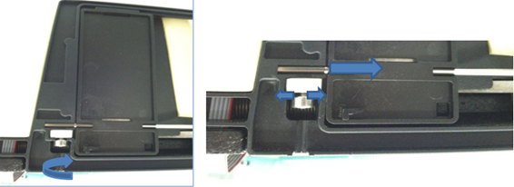
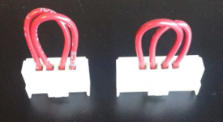

033.002.00001
Transition Temperature Incubator – COP System Message
Error Codes
This topic consolidates information for three error codes, one for each Incubator Carousel Drive.
| Drive | Dec | Hex |
|---|---|---|
|
1 2 3 |
032.002.00001 033.002.00001 034.002.00001 |
0x20.0x02.0x01 0x21.0x02.0x01 0x22.0x02.0x01 |
Complaint Description
Incubator Carousel Drive 1, 2, or 3 failed to initialize:
- Incubator 1 = High Temperature Incubator
- Incubator 2 = Transition Incubator
- Incubator 3 = AMP Incubator
TABLE OF CONTENTS
Technical Support
Restart the instrument to verify problem persists. Although this error can be intermittent, it is usually a sign of a problem and will require an FSE Field Service Engineer. service call.
Field Service Engineer. service call.
Field Service
Dip Switch
Make sure dip switches on the Incubator main PCB are correctly set.
|
Dip Switch |
Transition Incubator |
HT Incubator | Amplification Incubator |
|---|---|---|---|
| 1 | ON | OFF | OFF |
| 2 | OFF | OFF | OFF |
| 3 | OFF | OFF | OFF |
| 4 | OFF | OFF | OFF |
Resolution
Set the dip switch correctly.
Test
Initialize the Incubator.
Door Home Sensor or Pin
Using Service Software, verify that the sensor outputs “Open/Close”.
Resolution
- Using a swab and alcohol, clean the door sensor and door pin of any residue that may affect the optical door sensor.
- Replace the door sensor if faulty.
Test
Initialize the Incubator.
Over Torque of Door Fastener
Over-torquing the screw can warp the screw hole and push the door open. Fault may be intermittent, or door status may permanently read “Open”.

Make sure that the door is not warped, and use Service Software to determine if door sensor is properly reading.
Resolution
Reduce torque on the door fastener – replace door if warped beyond repair.
Test
Initialize the Incubator.
Carousel Home Sensor or Pin
Using Service Software, verify that the sensor outputs “In/Out”.
Resolution
- Using a swab and alcohol, clean the carousel home sensor and door pin of any residue that may affect the optical home sensor.
- Replace the carousel home sensor if faulty.
Test
Initialize the Incubator.
Door Assembly
The Incubator cover, wiring, or over torqued door screw can skew the door away from the carousel home pin.
Verify the door seats as flush as possible.
Verify the carousel home sensor correctly interacts with the carousel home pin.
Resolution
Re-seat the door ensuring the Incubator cover, wiring, and screws do not cause the door to skew away from the carousel home pin.
Test
Initialize the Incubator.
Faulty COP Cable or Connection
Isolate faulty connection or connections. The Panther modules are on a CAN-bus – the faulty connections may be upstream and caused by a preceding module. Use the jumpers to assist in isolating the faulty cable cable connection.

Resolution
Replace the faulty cable or cable connection.
Test
Initialize the Incubator.
 button at the top of the page to send feedback, comments, or change requests.
button at the top of the page to send feedback, comments, or change requests.